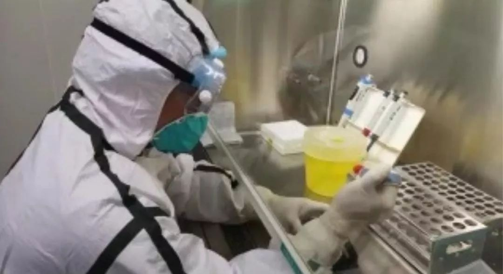
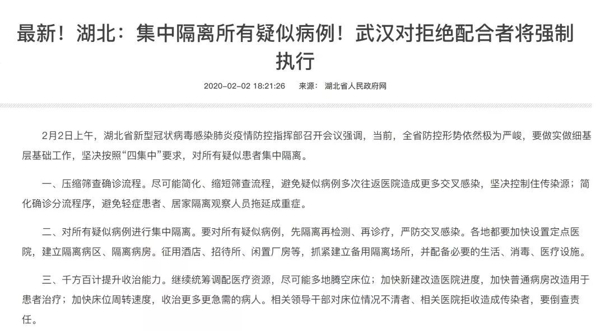

审批时限两年变四天，试剂盒“一路狂奔”进武汉 | 棱镜
原文链接 备份链接 作者 | 江晓川 编辑 | 张庆宁 出品 | 棱镜·腾讯小满工作室 欢迎下载腾讯新闻APP，阅读更多优质资讯 2月3日，国家卫健委高级别专家组成员李兰娟院士在接受央视采访时表示，武汉目前检测试剂（盒）数量不够……希望 …
「早发现、早隔离、早诊断、早治疗」，疫情暴发至今，漩涡中心的武汉正处于发病的高峰期，新增病例数不断增加。而何时能尽快地找到全部疑似病例、有效切断传染源，愈发成为武汉疫情防控的焦点，考验着决策者。
2 月 3 日，身处疫情一线的武汉大学中南医院影像科副主任张笑春的朋友圈截图受到关注，她认为：
在武汉疫区，应该以 CT 影像作为目前 2019nCoV 肺炎筛查的主要依据；
同时给予无症状或核酸检测阴性但 CT 影像阳性的人予以隔离，以防造成家庭聚集感染，让疫情进一步蔓延。

网传张笑春医生朋友圈截图
当日，张笑春医生向丁香园证实了截图内容，并详细解释了缘由。
张笑春的主张引发了热议，一方面用 CT 来进行筛查的可行度如何，另一方面是此前被提倡的轻症患者居家隔离措施是否真的有效？
丁香园从多位专家处获悉，目前无论是核酸检测还是 CT 检查都不能保证绝对的准确性，此外 CT 进行疑似病例的筛查还需要卫生经济学的考量，以及避免交叉感染的可操作性。

试剂盒检测结果或有偏差
假阴性可能会延误患者隔离
按照最新诊疗指南，利用荧光 RT-PCR 检测新型冠状病毒核酸阳性仍然是确诊的金标准，然而从疫情暴发至今，试剂盒短缺矛盾在多个厂家快速获批量产后是否真的充足供应，仍然悬而未决。
SARS 疫情时期，由于分子检测手段尚未成熟，经历了早期胸片影像结合流行病学证据来确诊的阶段，曾出现过不少误诊收治病例。
多年后的今天，在新型冠状病毒基因序列对外公布后，很快便有多个厂家作出了病毒核酸检测试剂盒。
不过，丁香园获悉，即便是作为确诊金标准的荧光 RT-PCR 试剂盒，在实际应用中，结果也并非是完全准确。
事实上，作为医疗器械产品，试剂盒的上市应当需要经过国家药监局的审批流程。
稍早前，国家卫健委指定各省级疾控中心从经过筛选的 3、4 家企业采购试剂盒，样品采集后需要经过多道流程审核后才能正式确诊，速度较慢。
1 月 20 日，钟南山院士宣布确认存在人传人后，大量涌入医院的疑似病例却因为试剂盒短缺而陷入无法确诊、住院的僵局，成为疫情暴发初期的争议焦点之一。
1 月 26 日，之江生物、捷诺生物、华大基因和华大智造 4 家企业的试剂盒以破纪录的速度通过国家药监局应急审批通道批准，加速生产到达定点医院。
此后，零星有报道显示试剂盒供应短缺问题出现缓解，但对于疫区中心的武汉而言，社交平台中伴随着床位紧张的问题，试剂盒仍有缺口的呼声未决。
2 月 3 日，张笑春医生通过朋友圈发文称：目前武汉市家庭聚集性发病越来越多，而且大多起病隐匿，一次甚至多次核酸检测显示阴性，无任何临床症状，这些如采取家居留观方式，必然造成疫情进一步蔓延。
当日，张笑春医生向丁香园证实了截图内容，她解释称，发文并非是否定核酸检测结果，而是认为其作为检测的最终手段，目前仍受到产量、采样方式等限制，武汉作为疫区无法在现阶段完全依赖核酸检测去筛查病人，达到切断传染源的防控效果。
「我提的这个建议只适合咱们灾区，不适合普通、散发病例筛查。普通的散病筛查要做到鉴别诊断，而 CT 不能做到鉴别诊断。」张笑春强调。
她表示，试剂盒由于研究时间紧迫很难尽善尽美，「生产流程复杂、满足不了大量的人群需求，加上核酸检测需要采样，也是非常讲究的，受到方方面面的限制，会造成（假）阴性结果，（漏掉本该被检出的感染者）。」
张笑春还提到，不同厂家的试剂盒选用的原料不同，也会对结果有影响。
无独有偶，2 月 2 日，李兰娟院士在接受央视采访时表态，称目前武汉的试剂盒供应仍然不足，不能满足病人的检测需求，还做不到「早发现、早隔离、早诊断、早治疗」。
在当日央视新闻 1+1 节目直播中，李兰娟还提到，试剂盒对于武汉发现病人、切断传染源非常重要，希望「正确率高的试剂盒多送一些到武汉来。」
一位不愿具名的感染病研究权威专家对于假阴性解释称，个别病人一开始发病的病毒载量比较低的时候，的确有可能存在假阴性。
这样的病人张笑春在武汉所见不少，「好多患者 CT 发现有问题，但核酸检测结果是阴性，让他们回家了。几天过后，患者情况加重，传染了一家子。」

正在做核酸检测的医生
图片来源于网络

CT 筛查可操作性强吗？
会不会交叉感染？
一方面是试剂盒供应不足，采集标本方式影响结果；另一方面一些 CT 诊断阳性的病人由于核酸检测结果为假阴性，漏诊后回到家里，最终造成家庭聚集发病。
基于以上的原因，张笑春教授在上述被广泛转发的朋友圈文章提到，新建的火神山医院容纳量仍然有限，应该即刻开始对只要与疑似病例有过接触者均排查 CT，阳性结果的就近集中隔离。
张笑春说，自己是出于医务人员的职业敏感性和良知，提出切合实际、阻断传播途径的措施。
丁香园从多位医生处获悉，试剂盒有假阴性结果的情况的确存在，但原因除了试剂盒本身不够灵敏之外，咽拭子采样标本核酸阳性率比痰检阳性率要低，但局限性在于痰标本获取更为困难。
目前，新型冠状病毒疑似病例的诊断则主要依据临床表现、流行病学证据，以及胸部影像学等，但是否一定要用 CT 在诊疗方案中并未提及。
浙江大学附属第二医院放射科主任医师、中国医师协会放射医师分会呼吸专委会主任委员张敏鸣教授认为，目前其所在的医院每天大约有 300 ~ 400 例发热患者，主要是采取胸部平片，即胸部摄片检查，「只有高度疑似的再进行 CT 或核酸检测。」
对于张笑春教授提出的 CT 筛查，张敏鸣从卫生经济学的角度觉得可操作性不强，需要分地区考虑。
首先是为了避免交叉感染的大量消毒消耗，「CT 特别容易产生交叉感染，必须要采取完全封闭的单独器具，检查一个病人，就需要进行一次要消毒，不光是机器消毒，工作人员的所有的装备都要消，那是巨大的消耗量。」
同时，CT 阳性也存在误诊可能，张敏鸣指出，「有很多的患者虽然有磨玻璃影，但可能就是流感，再去做核酸检测就是阴性。」
但对于疫区而言，「如果说 CT 查一个准一个，那我觉得是可以用的，但是也要看疫情医院的条件，必须是隔离的、专用的CT。」
「我特别担心大家夸大了 CT 的作用，一股脑的都去查 CT，而忽略了 CT检查过程中的感染控制。」张敏鸣说。
此外，前述感染病研究专家也表示，如果按照传染病防治的原则，「假如说病人多来不及，我们总结的经验是，可以按照『宁错勿漏』的原则，先进行 CT诊断，如果 CT 也明确有肺炎的话，就要高度怀疑，马上进行隔离治疗。」
针对使用影像学检查来代替核酸检测，有着 H1N1、H7N9 多次疫情防控经验的感染病研究专家表示，实际上 CT 影像明确地情况下，结合流行病学史，可以进行初步判断。
「目前的状况是很多的医院医生，对于疾病的影像表现不是十分了解，就很有可能带来诊断延误，所以他们需要等核酸检测的结果。」
综合以上专家观点，不难看出，CT 筛查严格来说是不可能作为核酸检测的替代品去确诊新型冠状病毒病例。
但是，如果在核酸检测条件不允许的情况下，武汉又存在大量疑似病例无法确诊，用 CT 诊断作为补充手段进行查漏补缺，从而尽快找到更多疑似病例和密切接触者进行隔离，的确符合感染病防控中「管理感染人群、切断传播途径」的原则。
正如张敏鸣教授所言，如果因为都去做 CT 而忽略防护，造成过程中的交叉感染，则更是必须要注意的地方。

居家隔离还是集中隔离？
早前，有医生自述自己在感染病毒后如何自行隔离多日获得好转的文章得到广泛传播，加上武汉医院一床难求，一段时间以来，很多武汉疑似病人都采取了自行去医院拿药、居家隔离的方式治疗。
但在张笑春医生的发文中，她认为，家庭隔离、留观室无效，应该立即叫停，采取集中隔离，隔离人群包括所有的是疑似病例、留观者、有密切接触史的人，「应该像非典当年似的，征用酒店、学校，提供给这些人一人一个房间。让他们每个人经过 14 天的隔离期，而不是让大众经过 14 天的隔离期。」
她告诉丁香园，自己父母都被感染后，她发现居家隔离属于「隔而不离」。具体说：不是说「居家隔离」这种方式无效，而是普遍人群的认知达不到医学隔离的要求。在家中需要做饭、用餐、活动，不可避免的会摘下口罩，有时候往往就忘了这回事，特别是家中有小孩子需要照顾时，就会让这种隔离变得无效，实际上仍在传播疾病。
「作为医生家庭，我们已经做了很严格的防护，但我的父母还是容易有疏忽。虽然戴着口罩，但一会儿觉得呼吸不畅就把口罩放到嘴巴下面了，你想想这哪能管用？」
2 月 2 日媒体报道，湖北省按照「四集中」要求，对所有疑似患者集中隔离。具体措施包括压缩筛查确诊流程、对所有疑似病例进行集中隔离、千方百计提升收治能力以及加强疫情搜索。

图片来源：新华网截图
其中，在隔离疑似病例部分，提及了将设置定点医院隔离病房，以及征用酒店、招待所、闲置厂房等，建立备用隔离场所。
此举与张晓春医生的建议颇为接近，也有不少评论这表明武汉加强了防治力度，有助于加快切断传染源。
不过，中国新闻周刊 3 日的报道也显示，一些疑似病例在接受社区安排进入隔离酒店后，仍然面临着诸多困境。
该报道提及，一名受访者的奶奶病情严重因没有床位留观家中，后被社区医院告知，可以到附近的集中隔离避免传染。然而受访者获悉，隔离酒店虽然有医生检测体温，但是没有治疗和吸氧设备，加上在 14 天隔离期不准家人探视，最终考虑到老人的状况，受访者拒绝前往。
另外一对高度疑似的夫妇则通过微博求助，称他们在被社区安排到定点酒店进行隔离后，里面并无医护人员监护，连体温计都没有，存在许多隐患。
此外，也有隔离酒店因为避免中央空调交叉感染而关闭，导致室温过低不适的情况也成为集中隔离点逐渐暴露的问题之一。
也有医生提倡居家隔离。张敏鸣教授认为，目前大多数隐性感染者，在免疫力正常的情况下，可能扛一扛就过去了。
「特别是轻症病人，在杭州也许就诊时查出来就送到定点医院去了，但是目前武汉医疗资源紧张的情况下，少去医院避免交叉感染，好好在家休息、睡觉，提高免疫力，是一个最佳的治疗方法。」
张敏鸣教授认为，目前武汉的医疗资源在超负担、大体量的运行，几乎就要消耗掉全部医护人员，应该呼吁的就是让疑似病人如果症状不明显的话就不要去医院，把重要的医护人员的精力留给重症病人。
针对居家隔离的不足，张敏鸣教授补充道，并不是所有家庭都有条件把轻症病人隔离在一个房间，那么可以采取征用酒店这样的方式进行隔离。
前述感染病研究专家则表示，「理论上主张只要有医院去做检测，有症状就要隔离治疗，应该采取更加重视的态度。居家隔离的原则至少是一人一间屋才有效，而不是几个人居住在一起。」
（本文首发于丁香园）
撰文：刘楚 史晨瑾
排版：CC
封面图来源：网络
_— Tips —_
我们的新书《生死之间》出版了
可识别下方图片中的二维码购买
偶尔治愈
to-cure-sometimes
——
记录人与疾病、衰老、死亡的
相处方式

偶尔治愈 | 常常帮助 | 总是安慰
原文链接 备份链接 作者 | 江晓川 编辑 | 张庆宁 出品 | 棱镜·腾讯小满工作室 欢迎下载腾讯新闻APP，阅读更多优质资讯 2月3日，国家卫健委高级别专家组成员李兰娟院士在接受央视采访时表示，武汉目前检测试剂（盒）数量不够……希望 …
原文链接 备份链接 *************▲*************1月24日，在武汉大学中南医院重症隔离病房，医护人员为病人治疗。 （新华社记者 熊琦/图） 全文共*2789*字，阅读大约需要6分钟 “黄冈市19日晚间获得了第一批 …
原文链接 备份链接 播放音乐 | 阅读效果更佳 感谢 | 您对霍超LEGAL的关注、阅读与分享 依据国务院2020年春节放假延长的通知，今天本应该是正式开始工作的日子，然而由于疫情的原因，全国多地的企业受地方政府的明确要求，只能继续暂停运 …
原文链接 备份链接 *************▲************* 在这间宽敞的隔离病房，我独自一人过年。 （林和黄供图/图） 全文共*4830*字，阅读大约需要10分钟。 一位医务人员拿出两根约20厘米长的棉签，往我鼻孔里沾取 …
原文链接 备份链接 桐柏县中心医院 作者供图 作者李强 这次肺炎疫情爆发后，我在老家陆续出现了一些这场疫情中经常被提及的症状。 我的老家是河南省南阳市桐柏县，离武汉仅200多公里。2020年1月23日，农历猪年腊月二十九，我开始干咳、 …